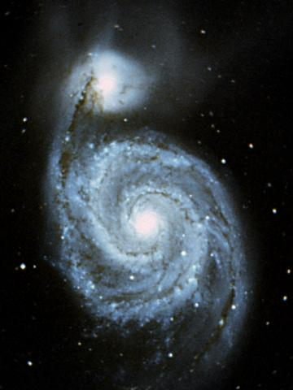
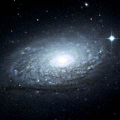
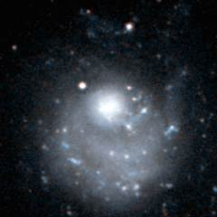
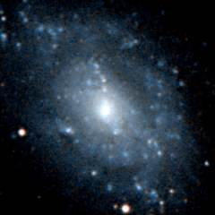

The M101 group contains the giant M101 galaxy and the very famous M51 or whirlpool galaxy. A third bright galaxy - M63 - is probably (although not certainly) also a member of this group.
|  M51 and NGC 5195 |
This is a picture of M51 and its smaller companion galaxy NGC 5195. M51 is a very famous galaxy. It has recently had a close encounter with NGC 5195 and the encounter has had the effect of producing very pronounced spiral arms in M51 as well as spraying billions of stars of NGC 5195 into intergalactic space. It is only in recent years that distance estimates have become good enough to show that these two galaxies are definite members of the M101 group. |
This is a list of the main galaxies in the M101 group. This group has never been properly studied and so this list only contains the galaxies which are the most probable members. UGC8331, M51, NGC5195, M101, NGC5474, NGC5477, NGC5585 and UGC9405 are all definite members of this group - the other galaxies are less certain.
1 2 3 4 5 6 7 8 9
Name Equatorial Blue Type Size Size RV Other
Coordinates Mag (') kly km/s Names
RA Dec
UGC 8313 13 13.9 +42 13 14.8 SBc 1.6 10 832
UGC 8331 13 15.5 +47 30 14.6 Irr 2.5 20 443 DDO 169
M63 13 15.8 +42 02 9.3 Sb 13.2 95 709 NGC 5055
M51 13 29.9 +47 12 8.9 Sb 9.8 70 640 NGC 5194
NGC 5195 13 30.0 +47 16 10.5 S? 5.6 40 649
UGC 8659 13 40.6 +55 26 16.2 Irr 1.0 5 ?
Holmberg IV 13 54.7 +53 54 13.8 Irr 4.3 30 276 UGC 8837
UGC 8882 13 57.3 +54 06 15.3 E 0.8 5 ?
PGC 49674 13 57.6 +51 58 17.3 Irr 0.6 5 ? MCG9-23-21
M101 14 03.2 +54 21 8.3 SBc 28.8 210 367 NGC 5457
NGC 5474 14 05.1 +53 40 11.3 Sc 4.8 35 405
NGC 5477 14 05.6 +54 28 14.4 Sm 1.7 10 430
PGC 50911 14 15.2 +57 05 16.5? Irr 0.9 10 432 KKH 87
NGC 5585 14 19.8 +56 44 11.2 SBc 5.8 40 412
UGC 9405 14 35.4 +57 15 14.5 Irr 1.7 10 310 DDO 194
|
Column 1: The usual name of the galaxy.
Column 2: The Right Ascension for epoch 2000.
Column 3: The Declination for epoch 2000.
Column 4: The blue apparent magnitude of the galaxy.
Column 5: The galaxy type: E=Elliptical, S0=Lenticular, Sa,Sb,Sc,Sd=Spiral,
SBa,SBb,SBc,SBd=Barred Spiral, Sm,SBm,Irr=Irregular.
Column 6: The angular diameter of the galaxy (arcminutes).
Column 7: The diameter of the galaxy (thousands of light years).
Column 8: The recessional velocity (km/s) of the galaxy relative to
the cosmic microwave background.
Column 9: Other names of the galaxy.
References:
Bremnes T, Binggeli B, Prugniel P, (1999), Structure and stellar content of dwarf
galaxies. III. B and R photometry of dwarf galaxies in the M 101 group
and the nearby field. Astron Astrophys Supp, 137, 337.
Giuricin G, Marinoni C, Ceriani L, Pisani A, (2000), Nearby optical galaxies:
selection of the sample and identification of groups. Astrophys J, 543, 178.
Garcia A, (1993), General study of group membership. II. Determination of nearby
groups. Astron Astrophys Supp, 100, 47.
Fouqué P, Gourgoulhon E, Chamaraux P, Paturel G, (1992), Groups of Galaxies within
80 Mpc, Astron and Astrophys Supp, 93, 211.
The HyperLeda Database, (2003).
Below - three galaxies in the M101 group. M63 (left) is a bright galaxy, but it may possibly lie behind the M101 group. NGC 5474 (centre) is a disturbed spiral galaxy which has probably had a close encounter with M101 in its recent history. NGC 5585 (right) is a fairly irregular spiral galaxy.
|  |  |  |
| M63 | NGC 5474 | NGC 5585 |
Shown below is the M101 galaxy. This is another very famous galaxy. It is also a very large spiral galaxy - with a diameter of over 200 thousand light years, it is twice as wide as the Milky Way. This galaxy may be one of the largest galaxies in the entire Virgo supercluster.
| Properties of the M101 Group | |
|---|---|
| Equatorial Coordinates | RA=14h00m Dec=+50° |
| Galactic Coordinates | l=100° b=+65° |
| Supergalactic Coordinates | L=70° B=+20° |
| Distance to the centre of the group | 25 million light years |
| Number of large galaxies | 7 |
| Alternative names for the group | M101/M51 Group |